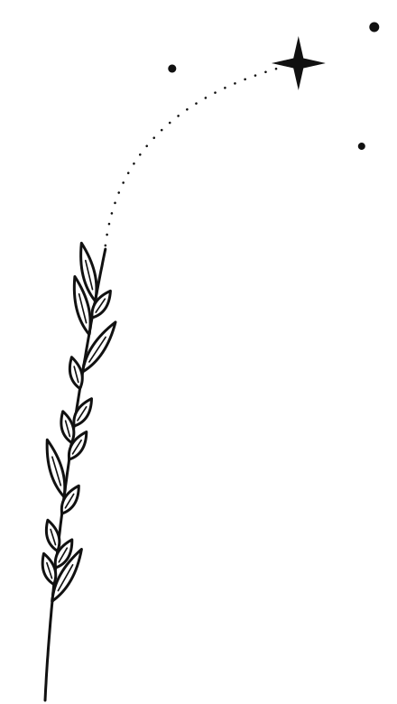
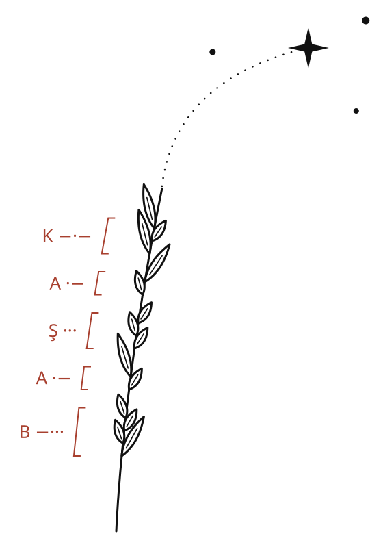

Başağın 14 tanesi Mors alfabesiyle onun adını yazıyor: kısa tane nokta, uzun tane çizgi. Dipten uca doğru okunuyor: B · A · Ş · A · K.
Ucundan yükselen iz, Başak takımyıldızının en parlak yıldızı Spika'ya varıyor. Spika, Latincede “buğday başağı” demek.